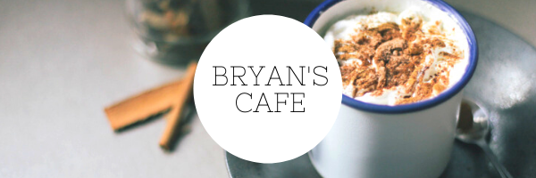
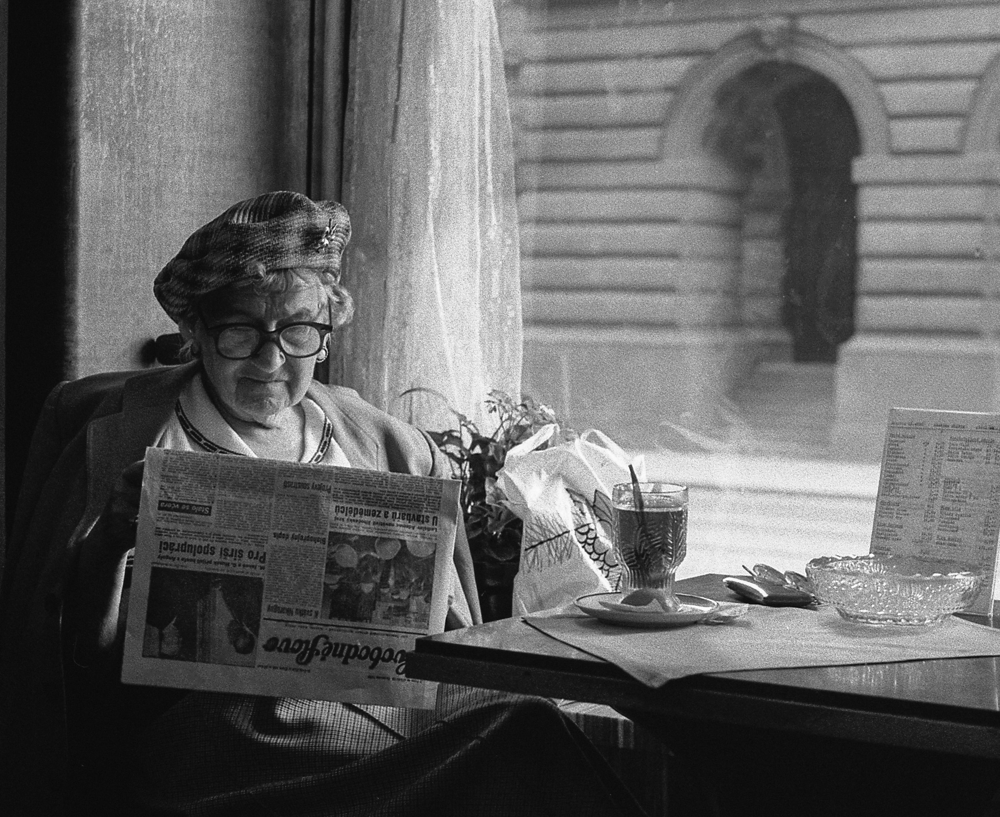

Coffee is our passion. As one of Australia’s most highly regarded specialty roasters, we’ve always had one simple goal: creating the best and most sustainable coffee in the world.


In close collaboration with our ethical trading company Project Origin, we source the highest quality green beans produced in the most sustainable ways possible. This collaborative work guarantees that we can empower communities and farmers worldwide to feel excited about the work they do.
With five venues across Canberra, Sydney and Melbourne and wholesale partners across Australia and worldwide, the Bryan Cafe community has continued to spread, maintaining our core values and mission.
Coffee is our passion. As one of Australia’s most highly regarded specialty roasters, we’ve always had one simple goal: creating the best and most sustainable coffee in the world.